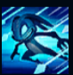
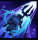
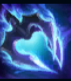
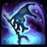
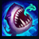

Fizz
| Fizz The Tidal Trickster | |
|---|---|
| Release date | 15.11.2011 |
| Class | Assassin |
| Positions | Middle |
| Resource | Mana |
| Range type | Melee |
| Adaptive type | Magic |
| Base statistics | |||
| Health | 570 – 2236 | Mana | 317.2 – 946.2 |
| Health regen. | 8 – 19.9 |
Mana regen. | 6 – 19.6 |
| Armor | 22 – 79.8 | Attack damage | 58 – 109 |
| Magic resist. | 32 – 53.25 | Crit. damage | 175% |
| Move. speed | 335 | Attack range | 175 |
Fizz este un yordle amfibian, care trăiește în recifurile din jurul Bilgewaterului. Deseori se scufundă după jertfele aruncate în ocean de căpitanii superstițioși și le aduce înapoi, însă chiar și cei mai nesăbuiți marinari știu că n-ar trebui să-l supere, deoarece nu puține sunt poveștile de groază despre cei care l-au subestimat pe micul amfibian. Crezut a fi un spirit capricios al oceanelor, Fizz poate controla bestiile din adâncuri și-și petrece timpul distrându-se pe seama prietenilor sau dușmanilor. |  |
LUPTĂTOR AGIL Fizz poate trece prin unități și suferă daune reduse cu o valoare fixă din toate sursele. |
||
|---|---|---|---|---|
 |
LOVITURA ARICIULUI-DE-MARE Fizz se năpustește prin țintă, provocându-i daune magice și aplicându-i efecte la impact. |
|||
 |
TRIDENT DIN AMBRĂ MARINĂ Țintele atacurilor lui Fizz sângerează și suferă daune magice timp de câteva secunde. Fizz își poate îmbunătăți următorul atac de bază pentru a provoca daune bonus și pentru a-și îmbunătăți următoarele atacuri pentru o perioadă scurtă. |
|||
|  |
GHIDUȘIE / VICLENIE Fizz sare și face acrobații în aer, apoi se proptește în trident și devine imposibil de țintit. Din această poziție, Fizz poate să aterizeze izbind pământul sau poate să sară din nou înainte de a ateriza în forță. |
|||
 |
ARUNCAREA MOMELII Fizz aruncă într-o direcție un pește care se lipește de orice campion pe care-l atinge, încetinindu-l. După un scurt timp, din subteran apare un rechin, care aruncă ținta în sus și îi dă la o parte pe ceilalți inamici aflați în apropiere. Atacul le provoacă daune magice tuturor inamicilor afectați și îi încetinește. |